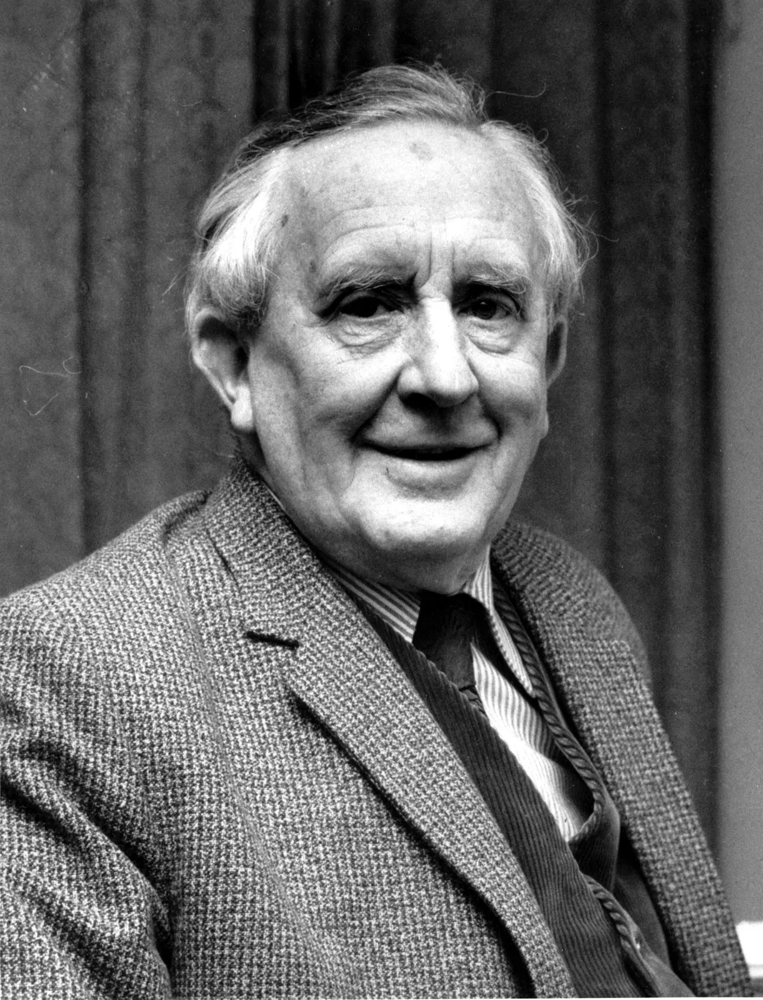
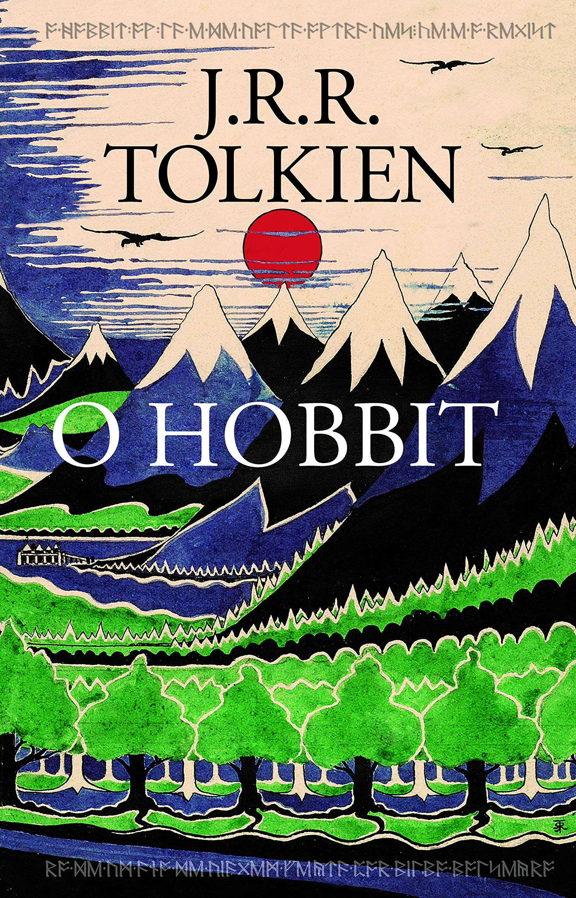
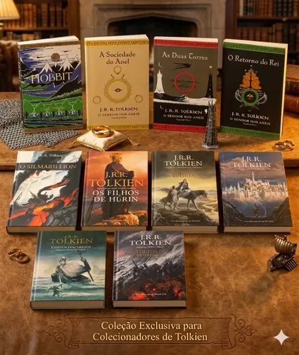

Biografia
John Ronald Reuel Tolkien (1892–1973) foi um brilhante acadêmico, filólogo e escritor britânico, amplamente considerado o pai da alta fantasia moderna. Através de sua imaginação incomparável e de um vasto conhecimento linguístico, ele deu vida ao universo da Terra Média, um dos mundos ficcionais mais ricos, complexos e influentes da história da literatura mundial. Suas obras redefiniram o gênero fantástico e continuam a encantar gerações de leitores ao redor do mundo. Nascido em Bloemfontein, na atual África do Sul, Tolkien mudou-se para a Inglaterra ainda na infância, onde desenvolveu desde cedo um amor profundo pela natureza e pelo estudo das palavras. Sua juventude foi marcada pela perda precoce dos pais e, mais tarde, pelos horrores da Primeira Guerra Mundial. Ele serviu no exército britânico e sobreviveu à sangrenta Batalha do Somme, uma experiência traumática que influenciou profundamente sua visão sobre a amizade, a perda e o heroísmo diante da destruição industrial.
Após a guerra, Tolkien seguiu uma brilhante carreira acadêmica, tornando-se professor de Língua e Literatura Inglesa na Universidade de Oxford. Como filólogo especialista em mitologias nórdicas e poemas medievais, sua verdadeira paixão era a invenção de idiomas. Ele criou dezenas de línguas artificiais complexas, como os dialetos élficos Quenya e Sindarin, e costumava dizer que concebeu a própria Terra Média principalmente para dar um lar e uma história aos povos que falavam as línguas que ele inventava. Sua trajetória na literatura comercial começou de forma despretensiosa em 1937 com a publicação de O Hobbit, uma história escrita originalmente para entreter seus próprios filhos. O sucesso estrondoso da obra levou seus editores a pedirem uma continuação, o que resultou em sua grande obra-prima: O Senhor dos Anéis, publicada entre 1954 e 1955. Dividido em três volumes, o épico misturou folclore, teologia e uma rica mitologia própria, transformando-se em um fenômeno cultural definitivo. Ao lado de amigos próximos como C.S. Lewis, autor de As Crônicas de Nárnia, Tolkien integrou o famoso grupo literário Os Inklings em Oxford. Embora tenha falecido em 1973, seu legado permaneceu vivo e em expansão através do trabalho de seu filho, Christopher Tolkien, que editou e publicou dezenas de manuscritos póstumos, incluindo O Silmarillion. Hoje, adaptado para o cinema, jogos e televisão, o universo de J.R.R. Tolkien permanece como um dos maiores pilares da cultura pop e da literatura universal.

O Hobbit
Publicado em 1937, O Hobbit conta a aventura de Bilbo Bolseiro, um hobbit que embarca em uma jornada ao lado de treze anões e do mago Gandalf.
Livros
- O Hobbit
Filmes
- Uma Jornada Inesperada (2012)
- A Desolação de Smaug (2013)
- A Batalha dos Cinco Exércitos (2014)

O Senhor dos Anéis
Considerada a principal obra de Tolkien, a trilogia acompanha Frodo Bolseiro em sua missão de destruir o Um Anel e impedir que Sauron domine a Terra-média.
Livros
Filmes
- A Sociedade do Anel (2001)
- As Duas Torres (2002)
- O Retorno do Rei (2003)

Outras Obras
Além de O Hobbit e O Senhor dos Anéis, Tolkien escreveu diversas obras importantes que expandem a história da Terra-média.
- O Silmarillion
- Contos Inacabados
- Os Filhos de Húrin
- Beren e Lúthien
- A Queda de Gondolin
Tolkien e C. S. Lewis
Tolkien e C. S. Lewis foram grandes amigos e membros do grupo literário conhecido como Inklings.
Os dois compartilhavam o interesse por mitologia, fantasia e literatura. Lewis foi um dos primeiros leitores das histórias da Terra-média e incentivou Tolkien a continuar escrevendo.
Graças a essa amizade, obras como O Senhor dos Anéis e As Crônicas de Nárnia puderam influenciar gerações de leitores ao redor do mundo.